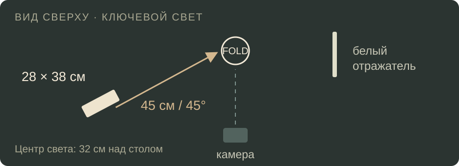

LAB / ПОПЫТКА 03
Размер источника
меняет тень
14 секунд · 1080 × 1920 · 24 кадра/с.
Рабочая сцена, постановка света, сравнение и схема.

В интервале 6–11 секунд сохранены камера, материал, положение и световой поток ключевого источника. Меняется его площадь. Тени на столе рассчитаны выборками по площади источника; локальное затенение и собственные тени сгибов заранее рассчитаны по геометрии. Многократные отражения света этой WebGL-сценой полностью не рассчитываются.
Авторский синтез звука; субъективное прослушивание не выполнено. Озвучки нет. Прогноз сохранений и просмотров по этому рендеру не делается.